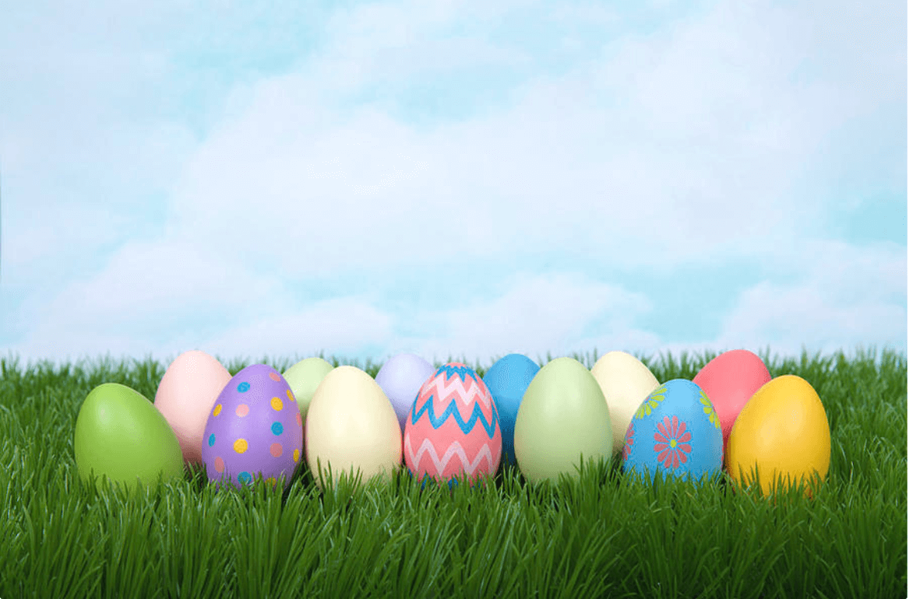

Dimensions of Sounds
This session introduces how we could describe speech sounds in a linguistic way. The key terms are inclusive of "place of articualtion," "manner of articulation," and "voicing." Check it out right now!


Coarticulation & Models
This session introduces a more advanced issue in articulatory phonetics, i.e. coarticulation. It refers to a complex organization of articulators in a speech flow. The key terms are inclusive of "coarticulation," "the feature-based model," and "the window model." Check it out right now!